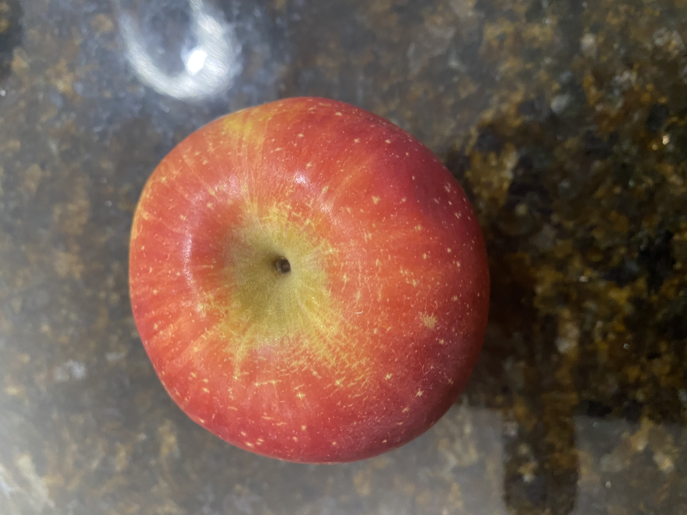
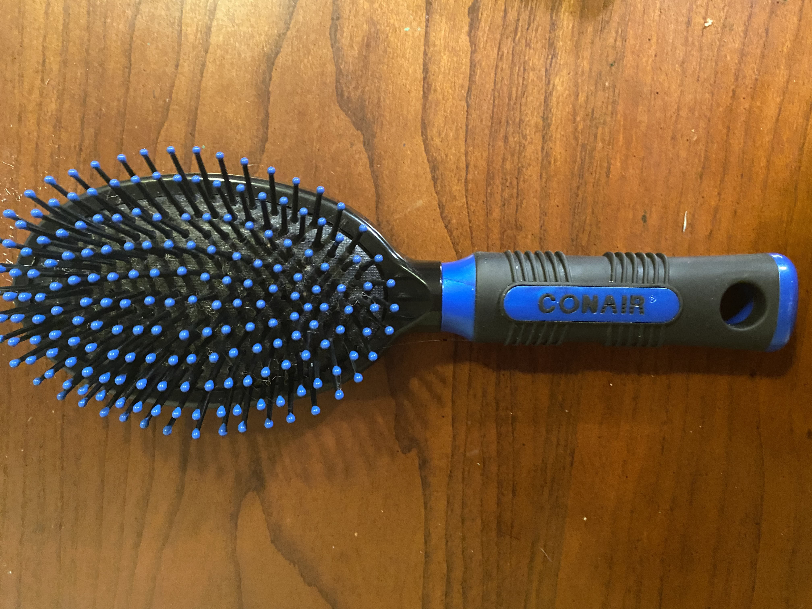
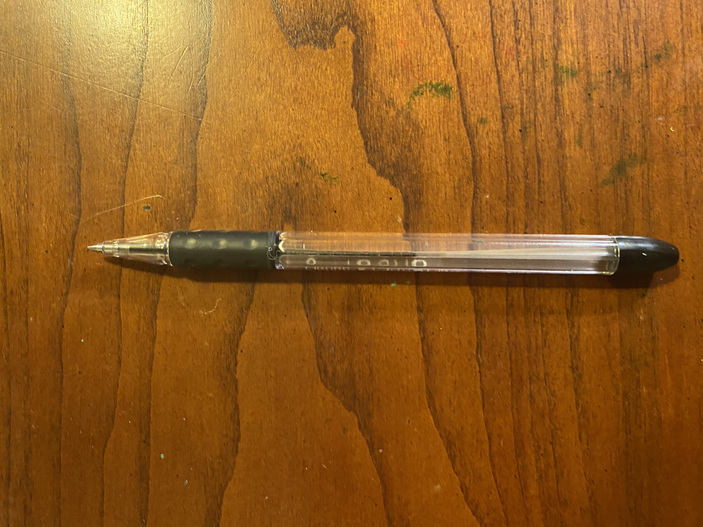

Test Image -
Output on Wolfram Project - Spork
Output on MobileNet Model - Spoon
Result - MobileNet is correct
Test Image -

Output on Wolfram Project - Red Delicious
Output on MobileNet Model - Granny Smith
Result - Both Wolfram and MobileNet are right because this is an apple
Test Image -

Output on Wolfram Project - Hairbursh
Output on MobileNet Model - Microphone
Result - Wolfram Project is correct
Test Image -

Output on Wolfram Project - Ballpoint pen
Output on MobileNet Model - Ballpoint Pen
Result - Both Wolfram project and MobileNet are correct